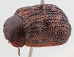
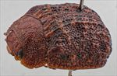
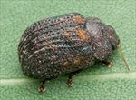
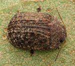
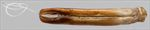
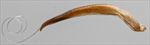
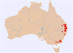

Click on images to enlarge
{kind=link}

Female, Boonah, S.E. Queensland
{kind=link}

Male, Deepwater, N.E. New South Wales
{kind=link}

Male, Pratten, S.E. Queensland
{kind=link}

Female, Bemboka, S.E. New South Wales
{kind=link}

Aedeagus, dorsal view (Deepwater, N.E. New South Wales)
{kind=link}

Aedeagus, lateral view (Deepwater, N.E. New South Wales)
{kind=link}

Distribution (pale-coloured circles indicate records obtained from iNaturalist)
Name
Trachymela scabra (Chapuis)
Reference specimen
2002-357a, Deepwater, NE New South Wales.
Adult Description
Length: ♂ 4.8–6.5 mm (n=9), ♀ 5.4(5.8)–8.2 mm (n=36).
Colouration:
- Head: mid-brown to (less often) very dark brown, often with clypeus darker or black, black along centre line behind eyes (often hidden by pronotum), labrum straw-brown, mandibles with dark brown or black tips; antennomeres 1–4 uniformly straw-brown, 5–11 grading darker towards apex, sometimes black.
- Pronotum: brown, concolorous with or fractionally darker than head, anterior marginal areas sometimes infuscated.
- Scutellum: very dark brown or black, darker than, or rarely concolorous with, pronotum.
- Elytra: brown, concolorous with or slightly paler than pronotum, with scattered maculae of darker brown or even black, these varying from very small to quite large, post-basal depression usually darker than surrounding surface, elytral lateral edge sometimes infuscated or black, punctures concolorous with interstices, humeral callus concolorous with or darker than surrounding area.
- Venter & Legs: head and thoracic ventrites dark brown or black, abdominal sternites similar or slightly paler, legs similar or paler, inside surface of elytral epipleura black.
- Cuticular Wax: a light and relatively evenly to slightly unevenly distributed light-brown layer.
Morphology:
- Head: body oblong, almost parallel-sided for much of length viewed dorsally, greatest height viewed laterally around or behind middle of elytral margin (PGH: ♂ ≈ 53–59% BL, ♀ ≈ 54% BL); punctures variable, sometimes moderately-sized and well-defined (pd ≈ 2–2.5× ef), distribution somewhat uneven, or extended longitudinally, or surface very rugose and punctures barely discernable; antennae short (AL/BL: ♂ 37–42%, ♀ 32–40%), filiform.
- Pronotum: almost evenly curved transversely with lateral margins only barely explanate, foveal depression absent or very slight, sometimes with a small round, pimple-like elevation towards inside edge, or whole of foveal area prominently domed above plane of curvature (northern specimens); discal surface rugulose (southern specimens) or relatively smooth (northern specimens); puncturation clearly impressed or sometimes (southern specimens) somewhat lost in surface rugulosity, coarser than those on head and mostly quite evenly and not very densely distributed in discal area, punctures becoming coarser in marginal region; interstices smooth or rough in discal area; thickened front margins smoothly join thinner lateral margins in a very smoothly rounded angle about or slightly greater than 90°, with lateral margin briefly straight before barely curving somewhat unevenly towards posterolateral angle; lateral edges often slightly crenulate or notched.
- Scutellum: surface relatively smooth to rugulose, unpunctured.
- Elytra: surface evenly curved transversely over discal region, then vertical or concave over marginal area, either evenly curved longitudinally or almost flat from just behind scutellum to about 2/3 of distance to apex with curvature increasing from there to apex; post-basal depression quite prominent but relatively compact, confined between VR3 and VR6; punctures moderately large and relatively evenly distributed between verrucae and set deeply among rows of interstices; many interstices in the form of prominent, long, unpunctured, elevated ridges, with particularly VR2, VR3, and VR5 extending almost full length of elytra; area below VR6 very rugulose, individual discrete verrucae more evident, often partially connected longitudinally by much smaller ridges (sometimes black), with connections via transverse or oblique ridges to verrucae in different rows also present; suture carinate for most of its length, surface discontinuous under humeral callus; lateral margin slightly sinuous; vertical extension of epipleura moderate (HCE/PW = 0.36–0.39).
- Venter: prosternal process almost parallel-sided over much of its length, lightly closed anteriorly; prosternal process and mesoventrite devoid of long setae; a single seta on anterior and median trochanter; front edge of metaventrite beveled, truncate, rarely notched; inner edge of posterior of epipleurae lacking setae.
Male Genitalia (Aedeagus):
- Dimensions: moderately long and very thin (LPE/BL = 34–35%); flagellum long and thin.
- Dorsal view: sides of shaft almost parallel from basal sulcus to about middle of ostium, then narrowing very slightly to just before apex where sides converge to form a broad, triangular apex; dorsal surface with well-defined dorso-median channel that terminates at posterior of ostial opening.
- Lateral view: shaft curved slightly around basal sulcus, broadest just anterior to basal sulcus, ventral surface then relatively straight, very slightly sinuous to near apex, where it curves downwards noticeably; upper surface converges with lower towards apex.
Immature Stages
Unknown.
Similar species
Ta53 is an easily recognisable species from its almost rectangular shape (almost like a Cryptocephaline) and the long, continuous ridges on the elytra.
Notes
- Taxonomy: The identification of Ta53 as Trachymela scabra (Chapuis) is by comparison with the type specimen in the Royal Belgian Institute of Natural Sciences, Brussels (RBINS). Morphological and host differences suggest that Ta53 may be composed of two separate species (see below).
- Distribution & Abundance: Recorded from Queensland, New South Wales, and Victoria.
- Host Associations: Queensland specimens (25 records) are almost invariably found on Eucalyptus crebra (Symphyomyrtus: Adnataria), while southern specimens have been collected almost exclusively from Maidenaria eucalypts, including E. acaciiformis (n=10), E. dalrympleana (n=1), E. nova-anglica (n=1), and unspecified Maidenaria (n=1).
- Morphological Variation: There are differences between specimens from Queensland and those from New South Wales and Victoria. The disc of the pronotum of northern specimens is smooth with well-defined and deeply impressed punctures, while that of southern specimens is very rugulose, with punctures not at all clearly defined. The foveal area of the pronotum, if not depressed, is relatively flat in southern specimens, with at most a small verruca towards its inner edge, while that of northern specimens is elevated into a broad shallow dome. Northern specimens tend to be smaller and darker than southern ones.
Copyright © 2026. All rights reserved.